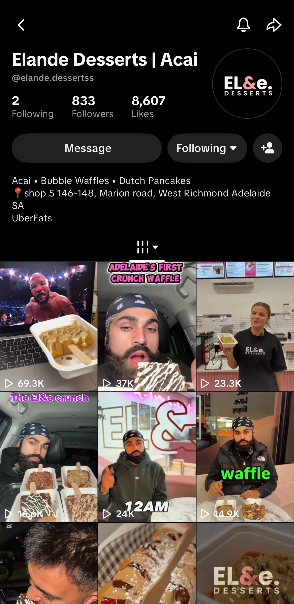

01 / The content engine
The owner on camera, me behind it
A new shop has no audience and no budget for ads, so everything rides on short-form video. The owner is the face of the brand; I plan, film, edit and post every piece.

Content pillars
- Food that stops the scrollClose-up sauce pours, waffles and açaí bowls shot in the shop.
- Owner-led storytellingThe owner on camera trying, reacting and introducing the menu.
- LaunchesNew items like “Adelaide's First Crunch Waffle” (37K TikTok views).
- Late-night positioningOpen until 12am every night, pushed as the go-to dessert run.
My workflow
- PlanConcepts, hooks and a posting schedule across Instagram and TikTok.
- Shoot & editFilmed in store and edited in CapCut with on-screen text and pacing for retention.
- Publish & manageCaptions, posting, story highlights and replying to the community.